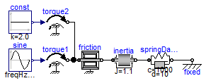
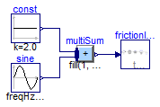
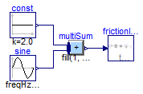

Steady state initialization over a mixed system of equations (inertia with friction)
Extends from Modelica.Icons.ExamplesPackage (Icon for packages containing runnable examples).
| Name | Description |
|---|---|
| Reference solution in pure Modelica | |
| Reference solution in pure Modelica using exactly the same structuring as in Model WithFMUs | |
| Solution with FMUs | |
| For all models in this package an FMU must be generated |
 FMITest.Initialization.MixedSystems.InertiaWithFrictionAndSteadyState.Reference
FMITest.Initialization.MixedSystems.InertiaWithFrictionAndSteadyState.Reference
Reference solution in pure Modelica

The parameters are selected so that both friction elements are partly sliding (mode = +/- 1) or partly stuck (mode = 0). Plot the following variables:


Extends from Modelica.Icons.Example (Icon for runnable examples).
FMITest.Initialization.MixedSystems.InertiaWithFrictionAndSteadyState.WithFMUsReference
Reference solution in pure Modelica using exactly the same structuring as in Model WithFMUs

Extends from Modelica.Icons.Example (Icon for runnable examples).
FMITest.Initialization.MixedSystems.InertiaWithFrictionAndSteadyState.WithFMUs
Solution with FMUs

Extends from Modelica.Icons.Example (Icon for runnable examples).